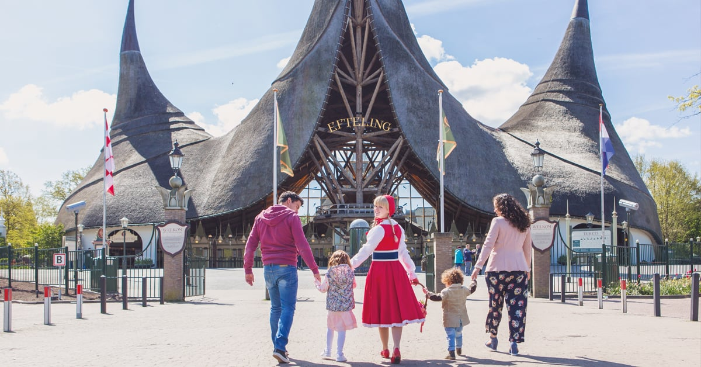

De Efteling is niet alleen een park vol spannende en betoverende attracties, maar ook een lust voor oog en oor. Gelegen in een groene, bosrijke omgeving en met oog voor detail in elk hoekje van het park,
straalt De Efteling een unieke sfeer uit die je nergens anders vindt. Van sfeervolle wandelpaden tot sprookjesachtige decoraties: zelfs tussen de attracties door is er volop te genieten.

Wie vaker in de Efteling is geweest, herkent het meteen: het zachte deuntje van de paddenstoelen die muziek spelen in het Sprookjesbos. Deze nostalgische klanken horen bij de magie van het park en brengen
jong en oud direct in sprookjessferen. Het zijn juist die kleine momenten die de Efteling zo onvergetelijk maken.
Voor ieder wat wils
De Efteling heeft voor ieder wat wils, van attracties voor de kleintjes tot aan achtbanen waarbij de adrenaline door je lichaam heen stroomt
Benieuwd wat de efteling allemaal te bieden heeft? Neem een kijkje tussen populairste de attracties en achtbanen hieronder!
Marerijk
Het Marerijk geeft thuis aan attracties zoals het sprookjesbos, villa volta, droomvlucht en het mooie volk van laaf, perfect voor de kleine kinderen om hun ogen uit te kijken.
Maar ook een mooie rustige plek om op adem te komen na alle actie en spanning in Ruigrijk!
Het Sprookjesbos
Villa Volta
Droomvlucht
Land van Laaf
Anderrijk
Het anderrijk neemt je mee op een mysterieuze reis door werelden vol avontuur en verwondering. Treed binnen in oosterse sferen bij Fata morgana,
stap in de bootjes van de piraña, ga op avontuur in 4D bij Fabula. Of race met hoge snelheid in de familieattractie Max en Moritz
Fata Morgana
Piraña
Fabula
Max en Moritz
Ruigrijk
Voor de echte thrillseekers is er het Ruigrijk, vol snelheid, spanning en sensatie. Scheur door loopings in de Python,
trotseer de draak in achtbaan Joris en de Draak of daal diep de afgrond in opzoek naar goud in Baron 1898.
Python
Joris en de Draak
Baron 1898
Reizenrijk
In het Reizenrijk ga je op avontuur over de grenzen van je fantasie. Vlieg door de lucht met de Vogel Rok
, reis de wereld rond in Carnaval Festival. Of neem even pauze in de bootjes van de gondeletta of vliegende tempel Pagode.